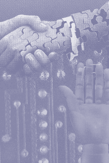

The
Body, Post Humans and Cyborgs:
The Influence of Politics of Identity and Emerging Digital and Bio-Technologies
on Human Representation in Late 20th Century Art
by Geri Wittig
Since the advent of graphical browsers on the internet in 1993 and the subsequent
explosion of the World Wide Web, the phenomenon of the internet has become
increasingly visible in popular culture. It is not a truly popular medium,
because although internet users, that is primarily web users, are becoming
a far wider ranging demographic than the original government and academic
internet user, it is still a rather limited group. However, it is a popular
medium in that even if an individual has not actually been on the internet,
with the proliferation of URL's popping up in advertising, publishing, and
television, they are most likely aware of its existence and of the dialogue
that surrounds its possible impact on society.
This changing demographic and popularization of the internet are having
an impact on the nature of this communication network. New types of social
interaction have been emerging on the internet and these developing social
exchanges and structures are adding new layers to postmodern discourse.
Enough time has passed for these phenomena to have been observed and analyzed
by theorists in a variety of academic fields, including cultural studies,
philosophy, media studies, sociology, art, etc., that the discourse around
computer mediated communication is maturing and the literature related to
computers in the cultural landscape is growing at a fast pace. The field
of art and technology is increasingly moving into the sphere of activity
that was largely dominated by photography during the 80's and early 90's,
that is the arena in the artworld where postmodern discourse takes place.
Within the artworld of the '80s and the early '90s, a great deal of activity
took place around the particular area of postmodern discourse known as the
politics of identity. The politics of identity, with its emphasis on the
politics of gender, race, ethnicity, and subject position was a rich area
of production for many artists. High profile artists, such as Barbara Kruger
and Jeff Koons, whose work was informed by the politics of identity, brought
this discourse to the forefront of the artworld.
There was a great deal of focus put on the body in identity politics during
this time period and this attention directed at the body was reflected in
the artworld. The body continues to be a focus in artwork that addresses
identity, but the representation of, attitude towards, and questions about,
the human body and identity are changing as emerging technologies in the
areas of telecommunications and biotechnology effect the discourse of identity
politics.
There is currently a great deal of activity in the field of the cultural
studies of science and technology concerning issues of identity in terms
of post humans and cyborgs. These issues are emerging in the artworld as
evidenced in three prominent international exhibitions that have taken place
in the past few years: Post Human, an exhibition which began at the FAE
Musee d'Art Contemporain, in France in the spring of 1992, traveled to Italy
and Greece, then ended at the Deichtorhallen Hamburg, in Hamburg, Germany
in the spring of 1993; Documenta IX, in Kassel, Germany during the summer
of 1992; and last year's Venice Biennale, Identity and Alterity. All three
exhibitions, in their curatorial vision, contained some element of the impact
of technology on human identity and raised questions about the post human
condition.
The Post Human exhibition was primarily concerned with these issues. In
his curatorial statement, Jeffrey Deitch states:
Social and scientific trends are converging to shape a new conception
of self, a new construction of what it means to be a human being.1
Although the tone of the exhibition at times seemed somewhat sensational,
the issues concerning advances in biotechnology, computer sciences and the
accompanying changes in social behavior, that the exhibition draws attention
to, are questions which are having an important impact on the politics of
identity.
Jan Hoet, the curator of Documenta IX, reveals the anxiety that can be produced
by the uncertainty of the impact of science and technology on human identity
combined with an extreme postmodern theory that can be paralyzing in its
relativity.
At a time when experiences are becoming less and less concrete -
more virtual, in fact - only total intersubjectivity, only the awareness
of specific concreteness and physicality, can provide a new impetus . .
. Reassembly of atomized experiences, reorganization beyond all scientific
systems; reconstruction of an existential sensory network: this must be
among the aims of art. The body must be talked about once more; not physically
but emotionally; not superficially but mentally; not as an ideal but in
all its vulnerability.2
The Venice Biennale of 1995, points to questions of postmodern identity
in its title, Identity and Alterity. The curator, Jean Clair, also draws
attention to the uncertainty of this transitional time in society:
If this retrospective was to have meaning then it should be exploited
as an opportunity to assay the validity of the theories that have been propounded
during the course of this century. The last decade has seen the collapse
of all the ideologies and utopias upon which the last one hundred years
have fed.3
Sherry Turkle, professor of the sociology of science at MIT, speaks of this
transitional period as a liminal moment:
. . . a moment when things are betwixt and between, when old structures
have broken down and new ones have not yet been created. Historically, these
times of change are the times of greatest cultural creativity; everything
is infused with new meanings.4
The cyborg question is very complex as there is an incredible array of ways
of categorizing cyborgs. There are many actual cyborgs among us in society.
Anyone with an artificial organ, limb or supplement, such as a pacemaker,
is a cyborg, but cyborg anthropology's concern is focused more on the social
impact of human/machine integration and speaks more in terms of a cyborg
society. Cyborg anthropology views the postmodern state as a mix of humans,
eco-systems, machines and various complex softwares (from laws to the codes
that control nuclear weapons) as one vast cybernetic organism.
Postmodern theory strongly informs the cultural studies of science and technology
and the concept of the fluidity of identity and its manifestation in interactive
narrative on the internet is a current topic of discourse. Sherry Turkle,
who studied with Lacan in the late 60's, early 70's, describes in her most
recent book, Life on the Screen, how theories that seemed right but
abstract become clear in the context of computing. In computing, theories
of constructing the self with language and the permeability of boundaries
becomes manifest. Computing is made up of a set of languages. It is on the
internet that the decentred nature of identity can be easily seen. Individuals
who participate in interactive narrative on the internet can move through
many selves while constructing a self and all this happens completely in
text.
The artworld is now positioning itself to participate more fully in this
discourse. Steps are taking place to bring the institutions and structures,
that largely construct the high visibility artworld, further into the art
and technology arena, particularly in the digital aspect. Institutions,
such as SFMOMA and the Whitney in New York, have constructed web sites,
some with project pages where interactive narrative art projects have the
potential to take place. The high profile art magazines, where a great deal
of art discourse takes place, are building their digital literacy. Art
Forum has brought on R.U. Sirius, formerly of Mondo 2000, to
write a bi-monthly column concerned with digital issues. In the April issue
of Flash Art, "Aperto", Flash Art's new virtual
exhibition, premiered with an exhibition called "Technofornia."
These exhibitions which will highlight the art currently being shown in
a particular city or region, exists as a cohesive exhibition only on the
pages of Flash Art and its web site. As the artworld expands into
the digital realm, the focus on remote humans embodied in real time digital
systems will exist alongside the preoccupation with the body, as issues
of organic vs. non-organic, post humans and cyborgs emerge to inform the
politics of identity.
10/96
Footnotes
1 Jeffrey Deitch, Post Human, (Amsterdam: Idea
Books, 1992), p. 27.
2 Roland Nachtigaller and Nicola von Velsen ed., Documenta IX,
(Stuttgart: Edition Cantz, 1992), p. 18.
3 Identity and Alterity. Figures of the Body 1895-1995, (Venice:
Marsilio Editori, 1995), forward.
4 Pamela McCorduck, "Sex, Lies and Avatars," Wired,
April, 1996, p.109.
Bibliography
Best, Steven and Kellner, Douglas. Postmodern Theory:
Critical Interrogations.
New York: Guilford Publications, Inc., 1991.
Deitch, Jeffrey. Post Human. Amsterdam: Idea Books, 1992.
Documenta IX. Stuttgart: Edition Cantz, 1992.
Hables Gray, Chris, ed. The Cyborg Handbook. New York: Routledge,
1995.
la Biennale di Venezia 1995: Identity and Alterity. Venice:
Marsilio Editori, 1995.
Lunenfeld, Peter. "Technofornia." Flash Art, March-April,
1996,p. 69-71.
McCorduck, Pamela. "Sex, Lies and Avatars." Wired,
April, 1996, p. 106-110, 158-165.
Stone, Allucquere Rosanne. The War of Desire and Technology at the
Close of the Mechanical Age.
Cambridge: The MIT Press, 1995.
Stryker, Susan. "Sex and Death Among the Cyborgs." Wired,
May, 1996, p.134-136.
Turkle, Sherry. Life on the Screen. New York: Simon & Schuster,
1995.